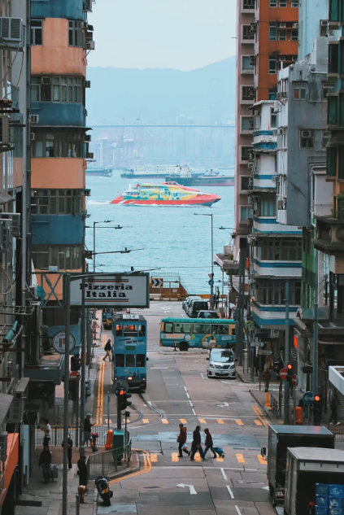
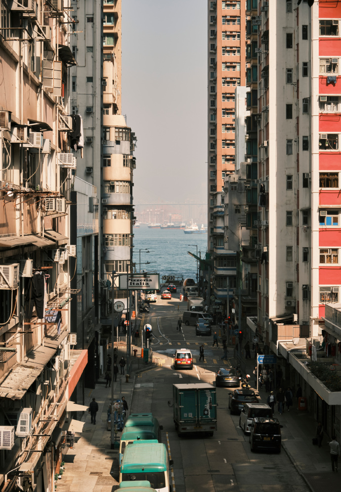

6. 坚尼地城-海景
Transport
港铁中环站→坚尼地城站（港岛线，约 15 分钟），或叮叮车（约 25 分钟，$3）
坚尼地城站C口：出站左转上楼梯，穿过儿童区再上楼穿过足球场至篮球场，看到一堆人趴铁丝网就是啦
Photo tips
在%Arabica咖啡店透过窗户拍海景，或站在斑马线上拍日系街景
Nearby food
新兴食家：流沙包
%Arabica：咖啡（可拍照）
Netizen photos

Reference photos

港铁中环站→坚尼地城站（港岛线，约 15 分钟），或叮叮车（约 25 分钟，$3）
坚尼地城站C口：出站左转上楼梯，穿过儿童区再上楼穿过足球场至篮球场，看到一堆人趴铁丝网就是啦
在%Arabica咖啡店透过窗户拍海景，或站在斑马线上拍日系街景
新兴食家：流沙包
%Arabica：咖啡（可拍照）

